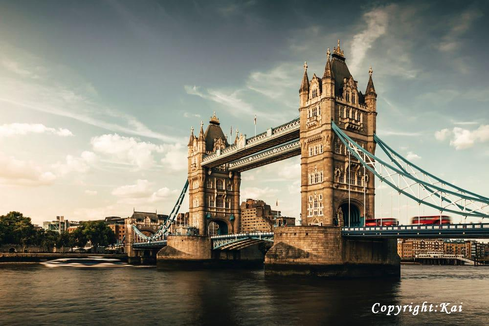
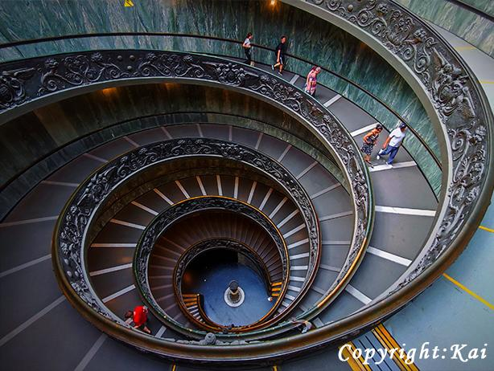
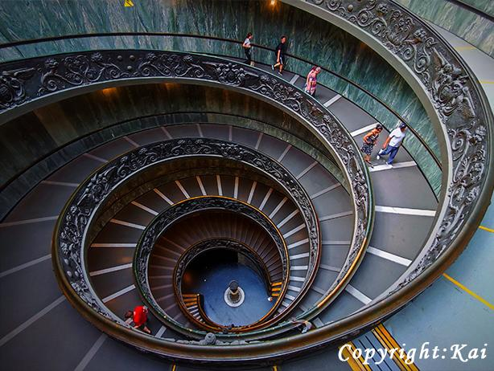

Yellowstone


Geographical Location: North America
Yellowstone is the first national park in the United States. It covers over 2.2 million acres, and provides an opportunity to see wildlife and explore geothermal areas. In fact, Yellowstone contains about half the world's active geysers.
These unique opportunities also bring out a lot of bad decisions among the tourists. Every year visitors injure themselves or the wildlife by getting close to the animals. You can see examples of people making bad decisions by visiting Yellowstone National Park: Invasion of the Idiots, Tourons of Yellowstone, or Cowboy State Daily.
Photo Gallery


London, United Kingdom
Geographical Location: London, United Kingdom
As one of the most iconic cities in the world, London carries a rich history that is matched by its continuous growth and evolution. A powerhouse of culture, politics, and finance, it stands as a city where the past and present exist harmoniously side by side. From the ancient towers that narrate tales of a regal past to modern architectural marvels that reach for the skies, London offers an unrivaled blend of history and modernity.
As one of the most iconic cities in the world, London carries a rich history that is matched by its continuous growth and evolution. A powerhouse of culture, politics, and finance, it stands as a city where the past and present exist harmoniously side by side. From the ancient towers that narrate tales of a regal past to modern architectural marvels that reach for the skies, London offers an unrivaled blend of history and modernity.
Photo Gallery


GuaMexico

.jpg)
Geographical Location: Guanajuato, Mexico
As the sun dips low in the sky, Guanajuato, the vibrant small town in Mexico, unfolds a spectacular tableau of hues and shadows that bewitch every onlooker. The historic town, celebrated as the backdrop for the acclaimed animation "Coco," transforms into a realm of dreams. Its vividly painted houses, basking in the warm golden glow of the evening sun, offer a picturesque sight that resonates deeply with the joyous and spirited theme of the beloved movie.
Guanajuato at twilight is a painting that comes to life, a perfect blend of reality and the fantastic world depicted in "Coco." The array of colors presented by the quaint houses form a harmonious canvas that radiates a tranquil yet vibrant energy as the day transitions to night. This little town, full of life and color, offers a surreal experience, inviting dreamers and artists alike to immerse themselves in its poetic scenery, alive with stories and rich cultural tapestry.
Photo Gallery


Vatican, Europe
 

Geographical Location: Vatican City
Vatican City, a city-state surrounded by Rome, Italy, is the spiritual and administrative focal point of the Roman Catholic Church. Home to architectural and artistic marvels, it carries a history rich with spirituality and exquisite artistry. Visitors can start their journey at the St. Peter's Square, which stands as a testament to masterful architecture and the deep-rooted history of the church.
he Vatican boasts an array of stunning sites that captivate the eye and nourish the soul. From the iconic spiral staircase in the Vatican Museums to the breath-taking paintings in the Athenian academy, the heritage it harbors is indeed immense. Even a glimpse of the city from the waterfront offers a panoramic that encapsulates the spirit and grandeur of Vatican City, presenting an ethereal view that evokes a sense of tranquility and reverence.
Photo Gallery